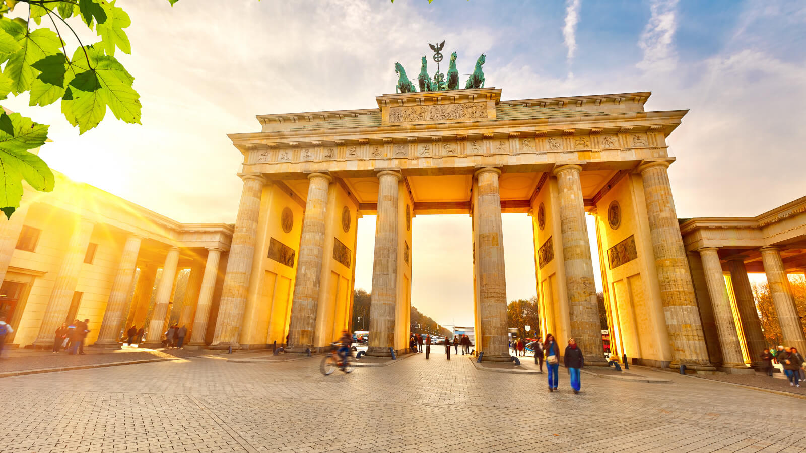
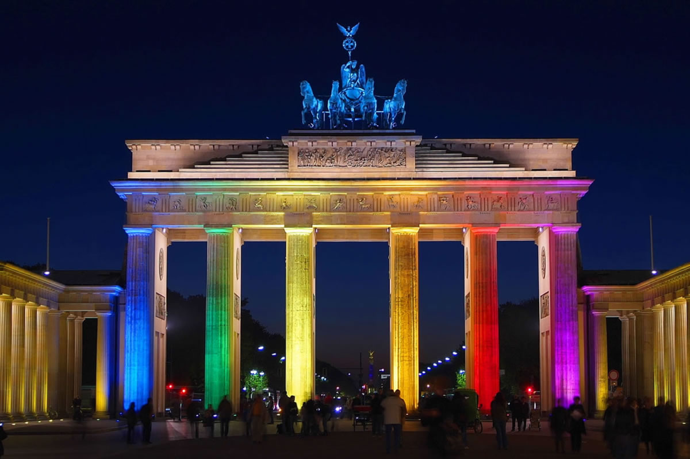
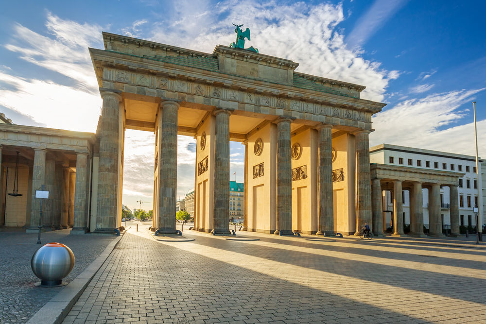
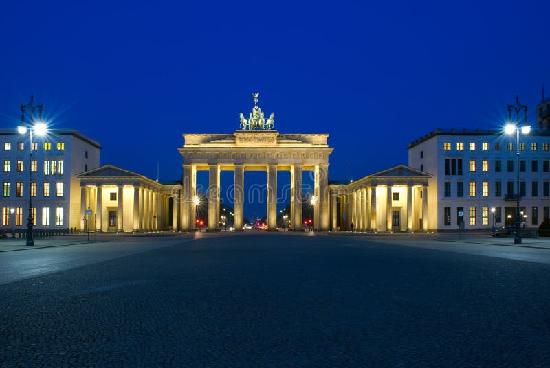
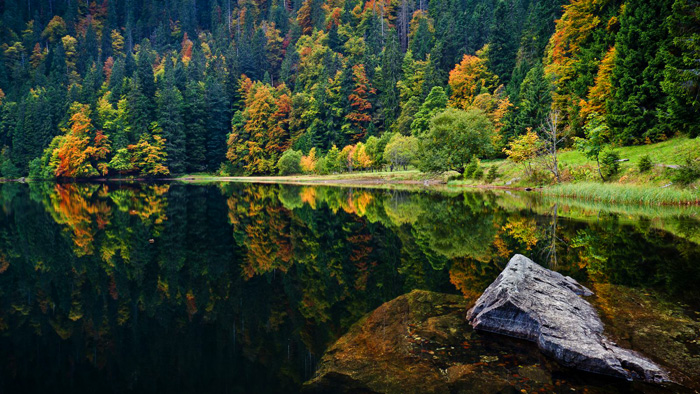

Alemania ofrece una rica mezcla de historia, cultura y paisajes, destacando la capital, Berlín

Una de las primeras cosas que ver en Berlín –y que probablemente te dejará con la boca abierta– es la imponente Puerta de Brandeburgo (Brandenburger Tor). Con sus 26 metros de altura y ese aire solemne, es todo un símbolo de la ciudad desde que fue construida en 1791.




Un bosque infinito y una vegetación muy densa hizo que los romanos apodarán esta zona del sur de Alemania, la Selva Negra. Esta región de bosques inmensos, ríos, lagos, cascadas, casas y granjas de madera es uno de los lugares que ver en Alemania más imprescindibles.

Una de las teorías alude a que el nombre de Selva Negra puede provenir de los densos bosques de abetos de la zona que dan al paisaje una apariencia oscura. Otra teoría es que fueron los romanos quienes le dieron dicho nombre al denominarla Populus nigra inspirados tal vez en la oscuridad que caracteriza el tránsito y los caminos por los espesos bosques que la pueblan.

para más información haz click aquí
volver
saber de dinamarca